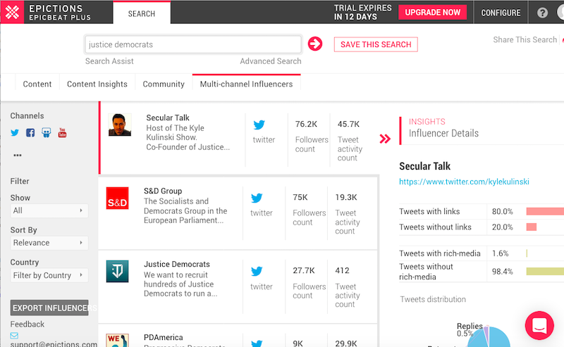
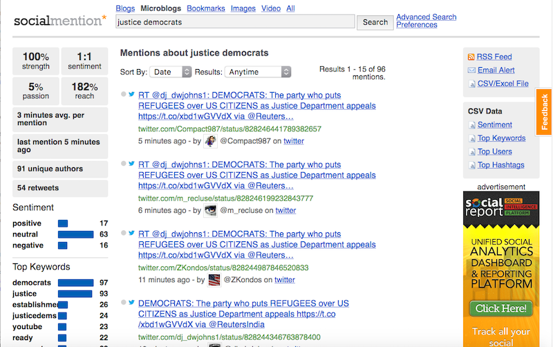

Finding Influencers: Digital Fundraising (2 of 3)

less then 1 minute
Summary
In Digital Fundraising Part 1 we covered what type of content you should have, and the layout you should use to maximize your email collection. In Digital Fundraising Part 2 we will look at how to find and reach out to Influence to help you connect to supports of your political or issue campaign.
Finding Influencers
The best way to find influencer is to look for local individuals that have a local public profile (.ie radio host, county elected officials, local celebrities, and local businesses/organizations), and try to reach out to them. If you are having trouble finding people to reach out then there are 2 free services that I would recommend:
Epictions allows you to do a number of things, but the most useful is the Multi-channel Influencers search. This allows you to not only find influencers, but it gives you relevant information like what content they share, and how often they reply.

Social Mention acts more like a search engine for social media feed then a tracker, but Social Mention does allow you to export data that will help with finding influencers, with most active users and most active hashtags. Quick tip microblogs = twitter and bookmarks = reddit.

Full List of Social Media Tools
Reaching Out
There are two basic ways of reaching out to some to share your blog post:
-
Hard Ask: “Hi John … We haven’t met … Could you share my article?”
-
Warm touch: “Hi John … I enjoyed you sharing how you helping out … We’re are trying to do the same at our non-for profit”
The Hard Ask seems to the first and often the only way people reach out, but there are a number of things that you should keep in mind.
1. Build a rapport: Be there in a personal way
The first no-no of effective outreach comes right out of PR 101: Don’t let the first time I learn of you or your brand be when you need me. If the influencers you are trying to have share your content is worthwhile, you should be on their radar in advance of the ask.
Make sure you do your research to find out what type of content they have, and learn about them vis social media and any shared contact you might have. Then you can reach out to them to say hi.
Three things you should include in your first email is:
-
Mentioning their work, which show that you done your homework and know their brand.
-
Highlight work you have done to create your post.
-
Don’t assume they will be interested in your content. Show them the value.
2. Be Brief, Be Unique
One of my favorite lines from the Greek tragedy Antigone, by Sophocles, is “Tell me briefly — not in some lengthy speech.”
If your pitch is more than three paragraphs, go back to the drawing board.
You’re trying to pique their interest, to give them enough to comfortably go on, not bore them with every detail.
The best outreach messages steal a page from the PR playbook:
-
They respect the person’s time
-
They show a knowledge of the person’s brand, content, and interests with regard to coverage
-
They make the person’s job easier (i.e., something the person would deem useful but not necessarily easily accessible)
We must do the same.
-
Be brief in highlighting the usefulness of what you offer and how it helps them in some meaningful way
-
Be bold in declaring your willingness to help their brand as much as your own
-
Be gone by exiting without spilling every single needless detail
Bonus: Be personal by using the person’s name at least once in the text since it fosters a greatest level of personalization and thoughtfulness (most people enjoy hearing their names)
3. Ask Wisely
Asking someone to share your content is the same as asking for a favor. But most people not give it a second thought, here are some tips that will help you with your outreach:
-
Don’t Ask for Tweets
It is obvious that you are reaching out to them because you want them to share your link and want some exposure for your piece.
But as soon as you ask for it directly, two thing happen:
-
Your email is no longer about giving value to them. It’s about asking for a favor to you.
-
If they don’t want to tweet your article, you’re putting them in a difficult situation.
-
But if they like your content, they will tweet it, even if you don’t ask
-
Ask For Links
Links are one of the most important factors for ranking in Google so always make sure you ask for a back link if they have a blog. Unlike like tweets though people do need a soft nudge to get that link, but make sure they have an easy way out, in case they don’t want to.
Just frame your request like this:
- Let me know what you think about the post. Maybe it’s worth mentioning in your article (or in future ones)?
You are still clearly asking for a link ,but you’re making it easy for them to ignore it if they don’t want to.
Paying Influencers
I would advise against paying Influencers because even if the value is there on paper someone who is willing to help for free will be a stronger advocate, and will help with your engagement rate even though they might not seem as influential.
If you do pay for influencers, then you need to make sure that you are tracking them to make sure that you are getting a return on your investment. While using Google Analytic is a good place to start you also need to use UTM codes to track your campaign.
Putting it All Together
Once you start building relationships with influencers you can move onto raising money through an email campaign, but there are some thing to keep in mind:
-
Continue to develop your relationships with Influencers you are already working with.
-
Always be reaching out to new influencers.
-
Follow up only once during outreach.
-
Ask for links not tweets.
-
While you can use a template make sure to make each email personal (.ie name and recent work).
Part 2: Part 3: Basics of an Email Fundraiser
In part 3 we will be going over the basics of email fundraising, which will allow you to start your digital fundraising, and start to build a list that can fund your political or issue campaign